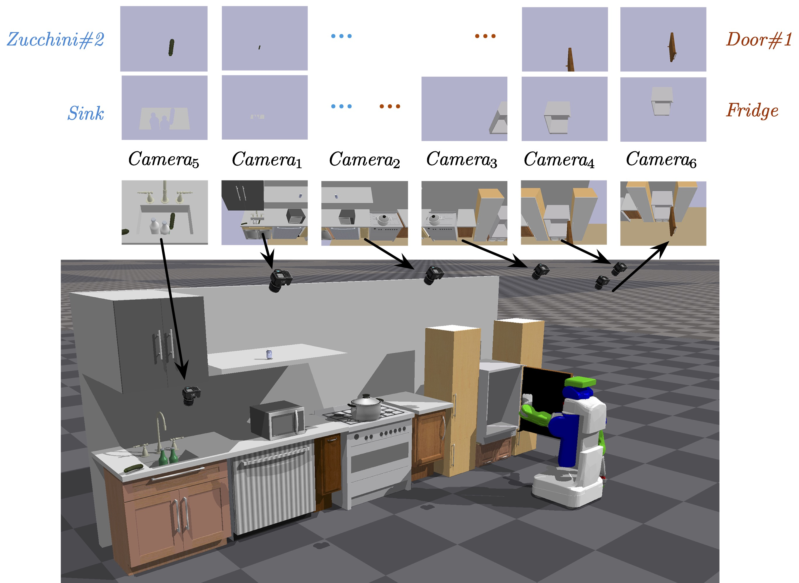

PIGINet is a Transformer-based architecture that fuses features of images, text, and values describing the problem and plan.

Abstract

We present a learning-enabled Task and Motion Planning (TAMP) algorithm for solving mobile manipulation problems in environments with many articulated and movable obstacles. Our idea is to bias the search procedure of a traditional TAMP planner with a learned plan feasibility predictor.
The core of our algorithm is PIGINet, a novel Transformer-based learning method that takes in a task plan, the goal, and the initial state, and predicts the probability of finding motion trajectories associated with the task plan. The elements of each action or relation in the initial state–such as text, object poses, and door joint angles– are processed to produce embeddings of the same dimension and fused together to produce each token in the input sequence to transformer encoder. A pre-trained CLIP model is used to generate corresponding text and image embeddings.
We integrate PIGINet within a TAMP planner that generates a diverse set of high-level task plans, sorts them by their predicted likelihood of feasibility, and refines them in that order. We evaluate the runtime of our TAMP algorithm on seven families of kitchen rearrangement problems, comparing its performance to that of non-learning baselines. Our experiments show that PIGINet substantially improves planning efficiency, cutting down runtime by 80% on problems with small state spaces and 10%-50% on larger ones, after being trained on only 150-600 problems. Finally, it also achieves zero-shot generalization to problems with unseen object categories thanks to its visual encoding of objects.